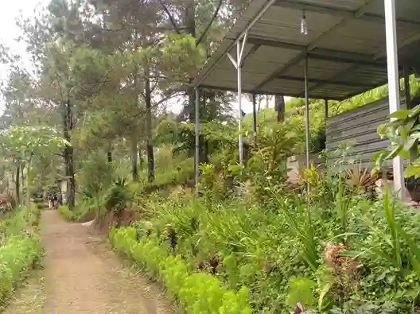

Musim penghujan yang sering datang tiba-tiba di dataran tinggi Batu bukanlah alasan membatalkan liburan alam Anda. Aroma *petrichor*—wangi tanah yang basah diguyur hujan—dan rintik gerimis justri membuat suasana syahdu berlipat ganda.
Akan tetapi, tubuh yang kebasahan ditambah embusan angin kencang berpotensi ekstrem memicu Hipotermia. Oleh sebab itu, *cotton is a killer!* Pemaham pakaian tahan air dan material yang Anda kenakan menentukan apakah kemping itu berjalan nikmat atau justru berujung dirawat.
"Tak ada istilah cuaca yang buruk ketika menjelajah alam bebas; yang ada hanyalah persiapan pakaian Anda yang tidak memadai." - Adiel Ebert
1. Hindari Kapas (Katun), Beralih ke Material Sintetis
Kaus katun (seperti baju distro/kaus oblong kasual biasa) sangat lambat melepaskan uap air. Saat terkena rintik hujan atau bahkan sekadar keringat, katun akan menyerap air tersebut dan menempel menahan dingin di permukaan kulit Anda. Ini bisa menurunkan suhu inti organ tubuh dengan drastis.
1.1 Pilih Polyester atau Wol Merino
Mulailah dengan menggunakan pakaian berbahan polyester untuk lapisan dalam (base layer). Jika memiliki anggaran lebih, _Merino Wool_ adalah mahakarya alam—tetap sanggup menghangatkan Anda secara ajaib meskipun kainnya tak sengaja basah kuyup karena kebocoran gerimis.


2. Jaket Cangkang Luar (Outer Shell/Hardshell) Wajib!
Banyak pemula yang mengira bahwa jaket _sweater hoodie_ biasa bisa menangkal badai. Kenyataannya, _sweater_ menyerap air laksana spons dapur. Anda membutuhkan pertahanan akhir pelindung cuaca yang dinamakan lapisan _Outer Shell_.

2.1 Water-Repellent vs Waterproof
Sangat penting membedakan jaket penahan angin (windbreaker water-repellent) dengan jaket anti badai (waterproof sungguhan dengan _seam seal_ pada jahitannya). Untuk menghadapi curah hujan Kota Batu, pilih yang berlabel "Waterproof Breathable", semisal mantel dengan komponen membran _Gore-Tex_ agar air luar tak tembus ke dalam namun keringat di dalam masih bisa menguap ke luar.

3. Aksesori Penunjang: Ponco dan Gaiters
Sangat berguna membawa ponco hujan berbentuk kelelawar sebagai pelapis tambahan untuk keadaan darurat yang tiba-tiba tumpah dari pekat awan mendung.
Namun bagian yang sering lupa diperhatikan adalah kaki. Air merembes ke sepatu dari mata kaki. Untuk mencegah ini, pergunakan celana lapangan dari bahan _quick-dry_ berbahan taslan tebal yang langsung disandingkan dengan *Gaiters*—pelindung betis kain khusus agar tetesan air di rumput tak merembet menetes masuk ke dalam kaus kaki bot Anda.

4. FAQ: Perlindungan Tubuh di Musim Basah
5. Kesimpulan
Seni menangani kemping di kala rintik hujan sepenuhnya bertumpu pada keterampilan *layering* kombo sintetis pakaian yang Anda pergunakan. Katakan selamat tinggal pada pakaian berbahan jins dan jaket wol kain, beralihlah ke _outer waterproof jacket_ yang melindungi penuh tubuh Anda dari guyuran alam bebas.
Tetap pertahankan kewaspadaan di area Camp Batu. Jika Anda sudah berbekal pengetahuan busana yang benar, menikmati nyanyian hujan yang memukul *flysheet* tenda ditemani mi gandum hangat jelas merupakan petualangan relaksasi yang tiada dua bandingan indahnya.
Adiel Ebert Nakula Shandy
Pengamat cuaca mikro lapangan dan instruktur mitigasi _survival_ basah. Mendedikasikan waktu mencerahkan calon penjelajah perihal proteksi teknikal luar ruang yang rasional.